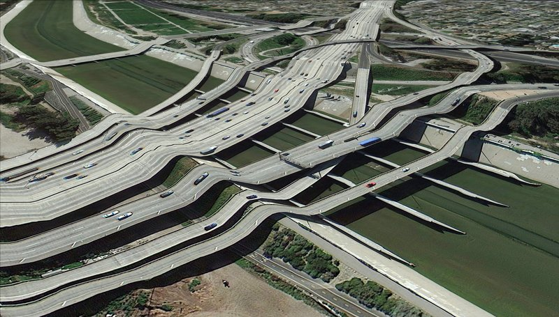
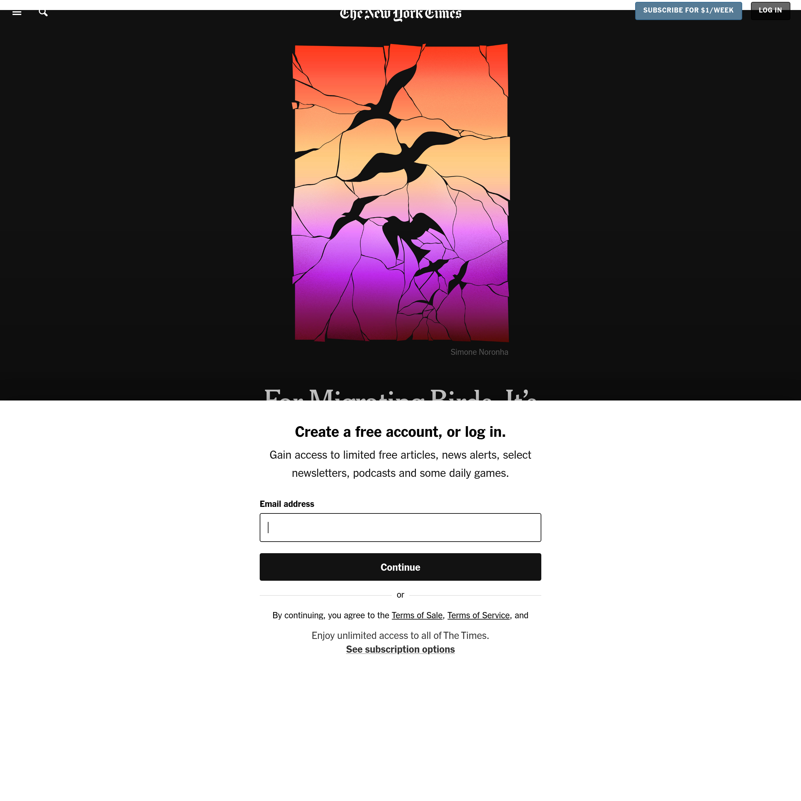

-

Abstract Piece LL-G29543/W Title: LL-G29543/W Artist: Samei @samei.tez On: objkt.com
-

clement-valla-postcard-from-goog-earch-33523794n-118112136w-800x800.jpg -
The Continuous Monument (1969) Superstudio.pdf -

For Migrating Birds, It’s the Flight of Their Lives Many of the birds that spend their summers in the United States are preparing to fly south. Here’s where they’re headed and why it matters.
-
Nature Sounds for Relaxation, Sleeping or Studying (Natural White Noise) -
“Historically, maps and data have shaped urban lives. With its capacity to represent the spatial world, data has the power to operate on, intervene in and change the built environment around us. Cities can (and should) be investigated with data, but they are also built, renewed, and scarred by it as well.”
Quote from 'Ways of Knowing Cities'
Ways of Knowing Cities Edited by Laura Kurgan and Dare Brawley Columbia Books on Architecture and the City